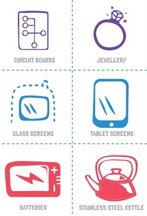

Using the display board give the students a chance to feel each of the display objects. Have them use description words such as smooth or rough, soft or hard, round or square. After all children have had a chance to feel the materials on the display board and have given their guesses, reveal what the object is and what materials the object is made from. Explain to the students that these parts can be recycled and made into new items.
Musical mobiles
This creative movement activity will allow students to use their listening skills and stimulate creative thinking. It will reinforces the message that you can recycle old mobiles and other items. Place a rug with a recycling sign in the middle of the dance area. Tell students that this is a pretend recycling box. When the music plays the students dance around pretending to be mobile phones when it stops they need to sit down on the rug/recycling box. Once they have accomplished this, have them move and dance like other products that can be recycled for example cans, milk cartons and glass jars. This game will allow students to learn about the sense of touch and sight.
Flashcard games
This activity allows students to identify basic recyclable materials and develop their memorisation skills. Introduce the term recycling explaining that it happens when waste (things you no longer use) can be made or transformed into new products. Ask to students to give some examples of items that are recycled at the early learning centre or home. Ask them if they think a mobile phone can be recycled. Explain to students that the mobile phone can be recycled and made into new products. You could use the MobileMuster display board if you would like to show the students what the inside of a mobile phone looks like. These memory and matching games will engage students whilst helping them associate different materials in a mobile phone with what products can be produced from recycling. You can download the flash cards from the MobileMuster website. The pictures on the flash cards show the mobile phone parts and examples of products that can be created in the recycling process.
Memory game: The game will develop colour recognition and memorisation skills as students need to pair the same colour cards. To play, colour print cards and cut out all cards. Put the cards in a pile, upside down, and take turns trying to pair the recycling and colour pair.
Finding a match: You will need a small group of 12 students for this game. Print in colour and cut out each MobileMuster flash card. Give each student a flash card and ask them to go around the room and find their match. They need to be the same colour and sit down in pairs. The teacher than goes around the group and asks each person to describe their card. The teacher talks about the different mobile phone parts as depicted on the card and how through recycling the materials can be made into new products.

Art
The colouring in worksheet will develop fine motor and counting skills. The sheets will help students to identify places within their local community, i.e. shop, library and post box where they can drop off old mobile phones for recycling. The worksheet will also develop symbol and colour recognition as students need to locate and specifically colour in green the three symbols within the scene. You can download the worksheet from the MobileMuster website.
Students can create their own toy mobile phones out of recycled materials. Collect small cardboard boxes that can be used for a handset, small lids that can be used as buttons and paper that can be used for a screen. The mobile phone art can be displayed around the classroom. At the end of the display period ask the students to dismantle their mobile phone so the materials can be sorted and recycled.
Story time
Story time is a great opportunity to introduce the concept of recycling. Start by asking some question about recycling such as:
- What does it mean to recycle?
- Does anybody recycle at home?
- What sorts of things can we recycle?
- Do you know why we recycle?
There is a number of books suitable for early learning centres on the subject of recycling. Here a just a few of our favourites and suitable discussion question.
Michael Recycle (Ellie Bethel) Tells the adventures of a young superhero whose power allows him to teach people about recycling. After reading the book ask a students to take on the role of Michael and encourage other children to interview him about what happened in the story. Students could dress up as their own environmental superhero who encourages people to look after the planet. Ask them what are their special recycling super powers?
Charlie and Lola We Are Extremely Very Good Recyclers (Lauren Child) After Charlie convinces Lola to recycle her old toys instead of throwing them away, Lola discovers a recycling competition. After reading the book ask the students the following question:
- What did Charlie teach Lola about recycling?
- How did Lola and her friends win a school tree?
- What type of items can we recycle at home?
- What type of things can we recycle in our classroom?
Set up a chart to see if the class could recycle 100 items in two weeks just like Lola and her friends did. Show students on a calendar and draw a tree on the calendar. Explain to students that their goal is to recycling 100 things before we get to the day with the tree on the calendar.
Don't Throw That Away! A Lift-the-Flap Book about Recycling and Reusing (Little Green Books) This book reminds us that our rubbish can actually be a source of treasure. From turning a jar into a vase, a plastic bottle into a bird feeder, cans into instruments, old clothes into fun costumes or an old box into a brand new car. After reading the book make one or more of the ideas presented in the book or supply a range of used materials for the children to create their own treasure.